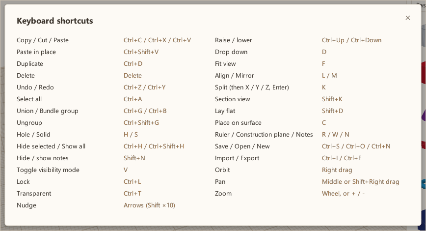

Every key and mouse action in one place. In ScottiCAD, press ? (or F1) to see the list of keys on screen.

The view
| To | Do this |
|---|
| Orbit | Drag with the right button |
| Pan | Drag with the middle button, or Shift + drag with the right button |
| Zoom | Mouse wheel, or + and - |
| Fit the selection (or everything) in the view | F |
| Look straight at a side | Click a face of the view cube |
Selecting
| To | Do this |
|---|
| Select a shape | Click it |
| Add to the selection, or take out of it | Shift + click |
| Select several | Drag a box round them, starting on empty space |
| Select everything | Ctrl+A |
| Select nothing, or leave a tool | Esc |
Editing
| Action | Keys |
|---|
| Copy, cut, paste | Ctrl+C, Ctrl+X, Ctrl+V |
| Paste in place | Ctrl+Shift+V |
| Duplicate | Ctrl+D |
| Delete | Delete |
| Undo | Ctrl+Z |
| Redo | Ctrl+Y, or Ctrl+Shift+Z |
Shapes and groups
| Action | Keys |
|---|
| Make a hole | H |
| Make a solid | S |
| Union group | Ctrl+G |
| Bundle group | Ctrl+B |
| Ungroup | Ctrl+Shift+G |
| Transparent, on and off | Ctrl+T |
| Lock, on and off | Ctrl+L |
| Hide the selection | Ctrl+H |
| Show everything | Ctrl+Shift+H |
| Hide and show shapes one by one | V |
Moving
| Action | Keys |
|---|
| Nudge across the plate by one snap step | Arrow keys |
| Nudge by ten steps | Shift + arrow keys |
| Raise or lower by one step | Ctrl+Up, Ctrl+Down |
| Raise or lower by ten steps | Ctrl+Shift+Up, Ctrl+Shift+Down |
| Drop onto the plate | D |
While dragging
| Dragging | Hold | To |
|---|
| A shape | Shift | Move in a straight line |
| A shape | Alt | Drag a copy |
| A size handle | Shift | Keep the proportions |
| A size handle | Alt | Size about the middle |
| A turn handle | Shift | Turn in steps of 45° |
| A new shape from the panel | C | Place it on the plate, ignoring other shapes |
| Anything | Esc | Cancel the drag |
| Tool | Key |
|---|
| Align | L |
| Mirror | M |
| Ruler | R |
| Construction plane | W |
| Notes | N |
| Hide and show notes | Shift+N |
| Place on surface | C |
| Lay flat | Shift+D |
| Split (then X, Y or Z, and Enter) | K |
| Section view | Shift+K |
Files
| Action | Keys |
|---|
| New design | Ctrl+N |
| Open | Ctrl+O |
| Save | Ctrl+S |
| Save as | Ctrl+Shift+S |
| Import | Ctrl+I |
| Export | Ctrl+E |
Typing numbers
| Key | Does |
|---|
| Enter | Keeps what you typed |
| Esc | Leaves the number as it was |
| Tab, Shift+Tab | Keeps what you typed and moves to the next or the previous size on the shape |
| Ctrl+A | Selects the whole number |
Numbers can be decimals (12.5), fractions (1/8, 1 1/2) or carry a unit (25mm, 2.5cm, 1in, 3/4").
The scripting console
| Action | Keys |
|---|
| Run the script | F5, or Ctrl+Enter |
| Stop a running script | Ctrl+C |
| Save the script | Ctrl+S |
| Open a script | Ctrl+O |
These apply while the console's editor has the keyboard. Click in the 3D view to give the keys back to the design.